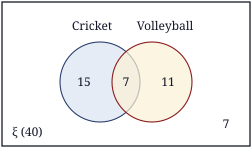

1. √2304: 23 → 42 = 16, remainder 7; 704 → 88 × 8 = 704, remainder 0
Final answer: 48
(2 marks)2. 73 ÷ 76 × 34 = 73 × 67 × 34 = 32
Final answer: 32 = 112
(2 marks)3. (2x)2 − 2(2x)(3) + 32
Final answer: 4x2 − 12x + 9
(2 marks)4. 6x2 − 4x + 3x − 2 = 2x(3x − 2) + 1(3x − 2)
Final answer: (3x − 2)(2x + 1)
(2 marks)5. L.C.M. of the coefficients = 36 ; a3, b3
Final answer: 36a3b3
(2 marks)6. 3(x + 1) − 2(x − 2)(x − 2)(x + 1) = 3x + 3 − 2x + 4(x − 2)(x + 1)
Final answer: x + 7(x − 2)(x + 1)
(2 marks)7. Arc length = 120360 × 2 × 227 × 21 = 44 cm ; Perimeter = 44 + 21 + 21
Final answer: 86 cm
(2 marks)8. AB̂C = AĈB = (180° − 40°) ÷ 2 = 70° ; AĈD = 180° − 70°
Final answer: 110°
(2 marks)9. log2 25 + log3 3−2 = 5 + (−2)
Final answer: 3
(2 marks)10. x4 = 81 = 34
Final answer: x = 3
(2 marks)11. Tn = a + (n − 1)d ; T15 = 7 + 14 × 4
Final answer: 63
(2 marks)12. n(A ∪ B) = n(A) + n(B) − n(A ∩ B) ; 27 = 18 + 15 − n(A ∩ B)
Final answer: 6
(2 marks)13. Interest = 25 000 × 12100 × 52
Final answer: Rs. 7 500
(2 marks)14. Man-days = 12 × 15 = 180 ; 180 ÷ 18
Final answer: 10 days
(2 marks)15. 2as = v2 − u2
Final answer: a = v2 − u22s
(2 marks)16. 2x − 3x < 1 + 5 ⇒ −x < 6 ⇒ x > −6
Final answer: the least integer value is −5
(2 marks)17. 2072 × 360°
Final answer: 100°
(2 marks)18. 410
Final answer: 25
(2 marks)19. Co-interior angles: (2x + 10) + (3x − 5) = 180 ⇒ x = 35 ; Ĉ = Â = 2(35) + 10
Final answer: 80°
(2 marks)20. V = πr2h = 227 × 7 × 7 × 10
Final answer: 1540 cm3
(2 marks)| (a) | |
| ① × 3: 9x + 6y = 48 ; ② × 2: 10x − 6y = 28 | 1 |
| Adding: 19x = 76 | 1 |
| x = 4 | 1 |
| By substitution: 12 + 2y = 16 ⇒ y = 2 | 1 |
| (b) | |
| (x − 7)(x + 2) = 0 | 1 |
| x = 7 or x = −2 | 1 |
| (c) | |
| (i) x(x + 3) = 54 ⇒ x2 + 3x − 54 = 0 | 1 |
| (ii) (x + 9)(x − 6) = 0 ⇒ x = 6 (x = −9 is not acceptable) | 1 |
| Width = 6 m, length = 9 m | 1 |
| (iii) Perimeter = 2(9 + 6) = 30 m ; length of wire = 3 × 30 = 90 m | 1 |
Total marks: 10
| (a) | |
| x = −2 ⇒ y = 0 ; x = 1 ⇒ y = −3 (if both are correct) | 1 |
| (b) | |
| Correct scale and axes | 1 |
| Plotting the 7 points correctly | 1 |
| Smooth curve | 1 |
| |
| (c) | |
| (i) Minimum value = −4 | 1 |
| (ii) x = 0 | 1 |
| (iii) −2 ≤ x ≤ 2 | 1 |
| (iv) x2 − 6 = 0 ⇔ x2 − 4 = 2 ; draw the line y = 2 and read: x ≈ ±2.45 (accept ±2.4 – ±2.5) | 1 |
| √6 ≈ 2.45 | 1 |
| (d) | |
| y = x2 − 1 | 1 |
Total marks: 10
| (a) | |
| Volume = 2.2 × 1.4 × 0.5 = 1.54 m3 | 1 |
| = 1540 litres | 1 |
| (b) | |
| Base area = 227 × 0.7 × 0.7 = 1.54 m2 | 1 |
| Height = 1.54 ÷ 1.54 | 1 |
| = 1 m (100 cm) | 1 |
| (c) | |
| 2πrh = 2 × 227 × 0.7 × 1 | 1 |
| = 4.4 m2 | 1 |
| (d) | |
| Remaining height 0.5 m ; volume = 1.54 × 0.5 = 0.77 m3 | 1 |
| = 770 litres | 1 |
| Time = 770 ÷ 35 = 22 minutes | 1 |
Total marks: 10
| (a) | |
| Diagram with A, B, C, D, O, P, Q correctly included | 1 |
| (b) In the triangles AOP and COQ, | |
| OA = OC (the diagonals of a parallelogram bisect each other) | 1 |
| AÔP = CÔQ (vertically opposite angles) | 1 |
| OÂP = OĈQ (AB ∥ DC, alternate angles) | 1 |
| ∴ ΔAOP ≡ ΔCOQ (A.A.S.) | 1 |
| (c) | |
| Corresponding sides of congruent triangles ⇒ AP = CQ | 1 |
| (d) | |
| AB = DC (opposite sides) ⇒ AB − AP = DC − CQ ⇒ PB = DQ | 1 |
| Since PB ∥ DQ as well, one pair of opposite sides is equal and parallel ⇒ PBQD is a parallelogram | 1 |
| (e) | |
| The diagonals divide the parallelogram into 4 triangles of equal area ; ΔAOB = ¼ × 60 | 1 |
| = 15 cm2 | 1 |
Total marks: 10
| (a) | |
| 30 – 40 | 1 |
| (b) | |
| Class mid-values: 15, 25, 35, 45, 55 | 1 |
| fx: 60, 175, 420, 450, 385 | 1 |
| Σfx = 1490 | 1 |
| Mean = 1490 ÷ 40 = 37.25 | 1 |
| (c) | |
| 40 marks or more = 10 + 7 = 17 | 1 |
| 1740 × 100 = 42.5% | 1 |
| (d) | |
| Total marks of the new students = 10 × 47.25 = 472.5 | 1 |
| Total = 1490 + 472.5 = 1962.5 | 1 |
| Mean = 1962.5 ÷ 50 = 39.25 | 1 |
Total marks: 10
| (a) | |
| 22 + 18 − x + 7 = 40 | 1 |
| x = 7 | 1 |
| (b) | |
 | |
| ξ and the two intersecting circles | 1 |
| 15, 7, 11 correct | 1 |
| 7 outside | 1 |
| (c) | |
| 22 − 7 = 15 | 1 |
| (d) | |
| (i) Only one sport = 15 + 11 = 26 | 1 |
| P = 2640 = 1320 | 1 |
| (ii) Do not play volleyball = 40 − 18 = 22 | 1 |
| P = 2240 = 1120 | 1 |
Total marks: 10